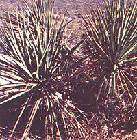

The spiny yucca plant-used for centuries as a staple food by Indians of the southwestern U.S.?may offer hope for the 20 million Americans who suffer from some form of arthritis. At least, that seems to be the bottom line of a study conducted by California physicians Robert Bingham and Bernard A. Bellew (and reported in The Journal of Applied Nutrition, Vol. 27, No. 2).
In the Bingham-Bellew study, 165 arthritis victims?aged 11 to 92?were given from two to eight yucca extract tablets per day for up to five months. (A control group of 51 patients received placebos, or non?medicinal tablets. None of the patients who participated in the study knew which kind of pills?yucca or placebo-he/she was receiving.)
The results: 49% of the patients who'd taken yucca tablets felt that the pills had had an overall beneficial effect on their symptoms. By contrast, only 21% of the patients who got placebos reported any improvement in their condition.
Perhaps more strikingly, 60% of all patients receiving yucca extract said that they felt less swelling, pain, and stiffness after trying the pills. And more than 90% of these people-when asked?said that they'd noticed no unpleasant effects stemming from their "yucca therapy".
Dr. Bingham?who has treated well over 1,000 patients with yucca pills during the past two years?says that persons who suffer gastrointestinal disturbances with their arthritis seem to derive the greatest benefit from yucca therapy. He adds: "The pills seem to be useful also in treating some patients who have had chronic headaches in connection with joint discomfort."
How does yucca extract act to alleviate some of the symptoms of arthritis? No one knows. In fact, there's no reason why yucca saponin (the substance of which the yucca pills are made) should exert any direct effect on the human body, since it's not absorbed into the bloodstream. Drs. Bingham and Bellew, however, suggest that the substance probably brings about relief indirectly, by reducing (or otherwise altering) the production of toxins in the intestinal tract.
The two California physicians make no claims that yucca pills can "cure" arthritis . . . nor do they say that most people who try the tablets can expect relief from arthritis symptoms. (This is only reasonable. There are more than a hundred forms of the disease we call "arthritis", and it'd be unrealistic?to say the least?to think that any single medicine could produce a panacea-like cure for the condition.)
One thing's certain: It can't hurt a person to try yucca tablets. According to Dr. Bingham, there's virtually no danger of allergic reactions (or conflicts between yucca and other medications) arising, since the pills' main ingredient is never actually absorbed into the body.
More research will, of course, be needed before anyone knows for sure just hour valuable a medicine yucca saponin is. For now, suffice it to say that the substance has?at least in some cases?proven effective as an arthritis remedy . . . and that the desert yucca-valued by Indian cultures for many centuries-may soon prove just as useful to modern medical science.
|
 |
|
|